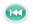
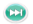
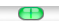
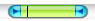
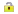
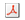

|  | Retourner
au début de la vidéo.
|
 | Aller à l'image précédente. |
| Lire la vidéo. |
| Pauser la vidéo. |
| Aller à l'image suivante. |
|  | Aller à la fin de la vidéo. |
| |
|  | Curseur de déplacement. |
|  | Barre de sélection de la Zone de Travail. |
|  | Vérouiller/Dévérouiller les bornes de la Zone de Travail. |
| Positionner l'image courante comme début de Zone de Travail. |
| Positionner l'image courante comme fin de Zone de Travail. |
| Rétablir la Zone de Travail à l'ensemble de la vidéo. |
| |
| Mode de lecture en boucle. |
| Mode de lecture à l'unité. |
| |
| Enregistrer l'image en cours. |
| Enregistrer une Séquence d'images. |
| Enregistrer un Diaporama des Images Clés. |
|  | Enregistrer un document Pdf des Images Clés. |